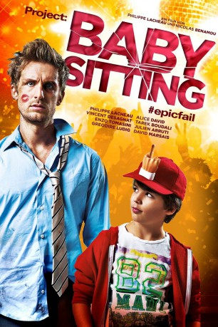

#1037 Babysitting
 gesehen am 02.07.2015
gesehen am 02.07.2015
 
 IMDB-Wertung: 6.8 / 10
IMDB-Wertung: 6.8 / 10  Metascore: 0
Metascore: 0 
Franck (Philippe Lacheau) fühlt sich noch nicht ganz angekommen im Leben, er hat zwar einen Job am Empfang eines Verlages, aber eigentlich will er seine Brötchen als Comic-Zeichner verdienen. Eine Frau fehlt auch noch an seiner Seite. Alles in allem könnte es also besser laufen - und das will das Geburtstagskind nun auch endlich selbst in die Hand nehmen: So fasst der gerade 30 Jahre alt Gewordene seinen Mut zusammen und will seinem Chef Marc Schaudel (Gérard Jugnot) seine Zeichnungen präsentieren, doch der hat für solche Dinge gerade gar keine Zeit, hat doch der Babysitter für seinen Sohn Remy (Enzo Tomasini) abgesagt. Kurzerhand wird Franck zum Aufpassen verdonnert. Nicht glücklich darüber willigt er ein, dabei wollen seine Freunde Alex (Julien Arruti) und Sam (Tarek Boudali) eigentlich seinen Geburtstag mit ihm feiern – und zwar in Form einer großen Sause. Wenn der Ehrengast des Abends nicht zur Party kommt, muss die eben zum Geburtstagskind kommen.
Jahr: 2014
Dauer: 85 Minuten
FSK: 12
Land: Frankreich Studio: EuroVideoTonspuren: DD5.1 - ,
Untertitel:
Auflösung: 1080p (1920x1040) Größe: 6942 MB
Genre: Komödie
Regisseur: Nicolas Benamou, Philippe Lacheau
Drehbuch: Julien Arruti, Tarek Boudali, Philippe Lacheau, Pierre Lacheau
Soundtrack: Maxime Desprez, Michaël Tordjman
Darsteller:
 Gérard Jugnot als M. Schaudel
Gérard Jugnot als M. Schaudel- Clotilde Courau als Mme Schaudel
- Alice Dufour als Copine Paul
- Aziliz Le Guern als
- Marie Wadoux als
- Philippe Lacheau als Franck
- Alice David als Sonia
 Vincent Desagnat als Ernest
Vincent Desagnat als Ernest- Tarek Boudali als Sam
- Julien Arruti als Alex
- Grégoire Ludig als Paul
- David Marsais als Jean
- Philippe Duquesne als Agent Caillaud
- Charlotte Gabris als Estelle
- David Salles als Commissaire Laville
- Philippe Brigaud als Monsieur Monet
- Enzo Tomasini als Rémi
- Vladimir Houbart als Le forain
- Pascal Boisson als Anthony
- Sylvia Fasolo als La strip-teaseuse
- Nicolas Grandhomme als Policier caméra
- Cindy Bonafini als La bombe atomique
- Raphaël Hidrot als Le policier téléphone
- Azedine Kasri als Fêtard exta 1
- Thomas Blumenthal als Fêtard exta 2
- Charlie Kiman als Fêtard pagaie
 Yun Lai als Homme de la soirée
Yun Lai als Homme de la soirée Yvonne Gradelet als Une spectatrice , uncredited
Yvonne Gradelet als Une spectatrice , uncredited- Michèle Raingeval als Une spectatrice , uncredited
Datei: X:\2014(A-F)\Babysitting (2014, FSK, 1920x1040).mkv seit 15.05.2015
Festplatte: HD 2013(I-Z)-2014(A-Z)
 Es gibt insgesamt 119 Filme in der Gruppe '2014(A-F)'
Es gibt insgesamt 119 Filme in der Gruppe '2014(A-F)'